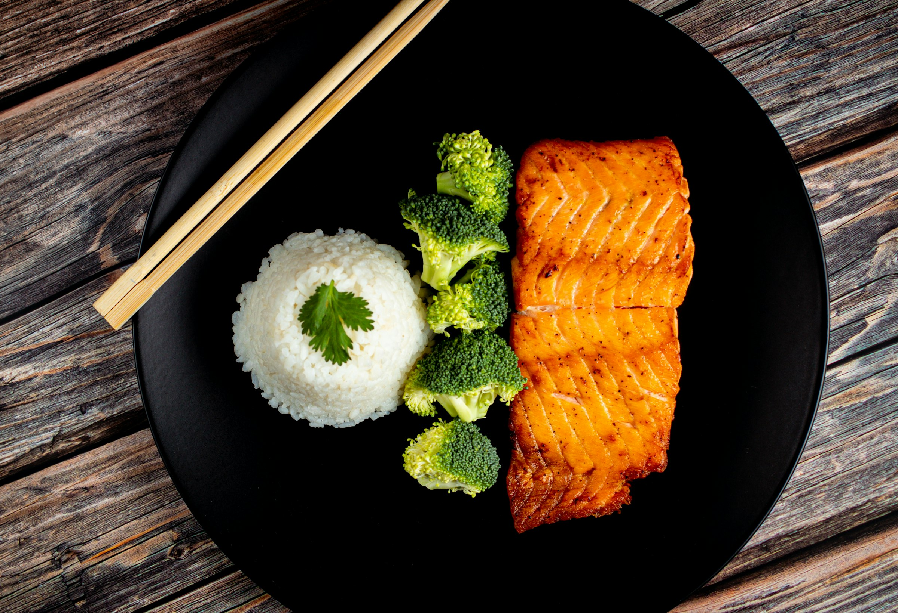
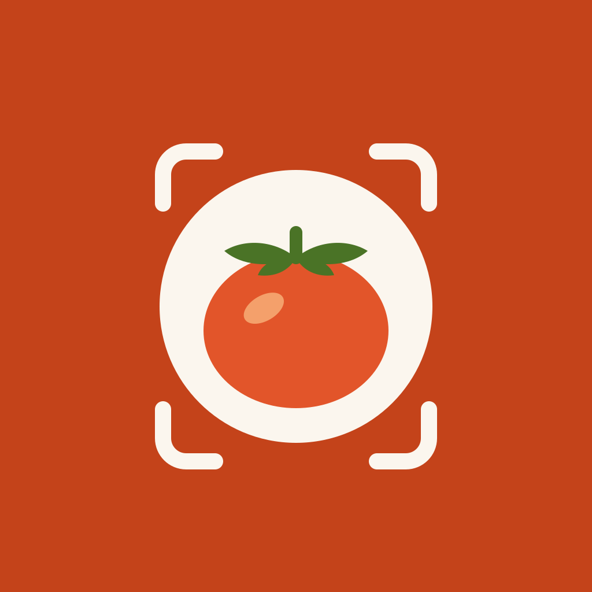

Snap → 3 s → doneEvery item, portion and kcal, ready to confirm
Brand principles
01The photo is the interface
Logging starts with the camera. Everything after is a quick correction, never a form.
02Honest estimates
Every item shows how sure we are. Nothing is saved until you confirm it.
03Food, not guilt
No red alarms, no "bad" foods, no shame. Over goal is just a number.
04Two taps, then dinner
Recent foods first, sensible defaults, no pop-ups. Then get back to your meal.

Analysing your plate · 4 foods found
1234
Salmon, cookedHigh confidence
140 g · 288
White riceCheck portion
150 g · 195
Broccoli, boiledHigh confidence
90 g · 32
Oil or glaze?Not sure. Tap to choose
5 g · 44
UI fragments · built from the tokens
879kcal left today
Eaten 1,171Goal 2,050
P · Protein70 / 110 g
F · Fat45 / 68 g
C · Carbs127 / 250 g
Fits your breakfast
Oat & blueberry yogurt bowl
5 min3 ingredientsP 26 · F 7 · C 47
344 kcalLog portion
Per 100 g
Avocado, raw ✓ USDA
160 kcal · P 2.0 · F 14.7 · C 8.5
Salmon, cooked ✓ USDA
206 kcal · P 22.1 · F 12.4 · C 0
White rice, cooked ✓ USDA
130 kcal · P 2.7 · F 0.3 · C 28.2
High confidenceCheck portionNot sureOver by 120 kcal. It's a number, not a verdict.
Numbers are real USDA FoodData Central values. The recipe card is Greek yogurt 200 g + rolled oats 40 g + blueberries 80 g. Over goal is shown in Turmeric, never error red.
Palette · named after food
Contrast on Oat milk · WCAG AA
Oat milk#FBF6EEBackground
Rice#FFFCF6Cards, sheets
Apricot#FCE3CCTints, chips
Honey#F2B63DHighlights
Persimmon#C4431ABrand, CTA · 4.7
Avocado#4A7326Freshness · 5.2
Walnut#6B5A4ASecondary · 6.1
Rye crust#2B2118Text · 14.6
P · Beetroot#9B2F63
F · Mustard#A77A0B
C · Blueberry#3B6CC0
Basilsuccess
Turmericwarning · over goal
Chilierrors only
Typography
Google Fonts · SIL OFL
Aa
Headline Young Serif · 400
We found 4 foods
Use for headlines and big moments only, 20 px and up. A warm market-sign serif with one weight, so hierarchy comes from size.
Body & UI Hanken Grotesk · 400 / 600 / 700
Check the portion, then add it to Lunch.
All interface text. Body 16, callout 14, caption 12 minimum. Scales with Dynamic Type and Android sp.
Numbers Azeret Mono · 500
Every number: kcal, grams, macros. Tabular figures, so columns and totals line up.
559 kcalP 37F 23C 49
Icons
24 px grid · 2 px round stroke · SVG
Today
Diary
Scan
Recipes
Profile
Search
Barcode
Frame
Sure
Check
Not sure
Portion
Confidence is always icon + word, never colour alone.
App icon
1024 × 1024 · opaque · no pre-rounded corners

Master (square)
iOS mask

Android adaptive 66/108 safe zone
A ripe persimmon on an oat plate, inside the camera frame. It reads as food first and as a camera app second.
9:41
1234
We found 4 foodsCheck anything marked below
Lunch
1
Salmon, cooked
High confidence
140 g
288
2
White rice
Check portion
150 g
195
3
Broccoli, boiled
High confidence
90 g
32
4
Oil or glaze?
Not sure. Tap to choose
5 g
44
559 kcal
P 37F 23C 49
Add to Lunch · 559 kcal
Photo estimates can be off by 10–20%. Not medical advice.